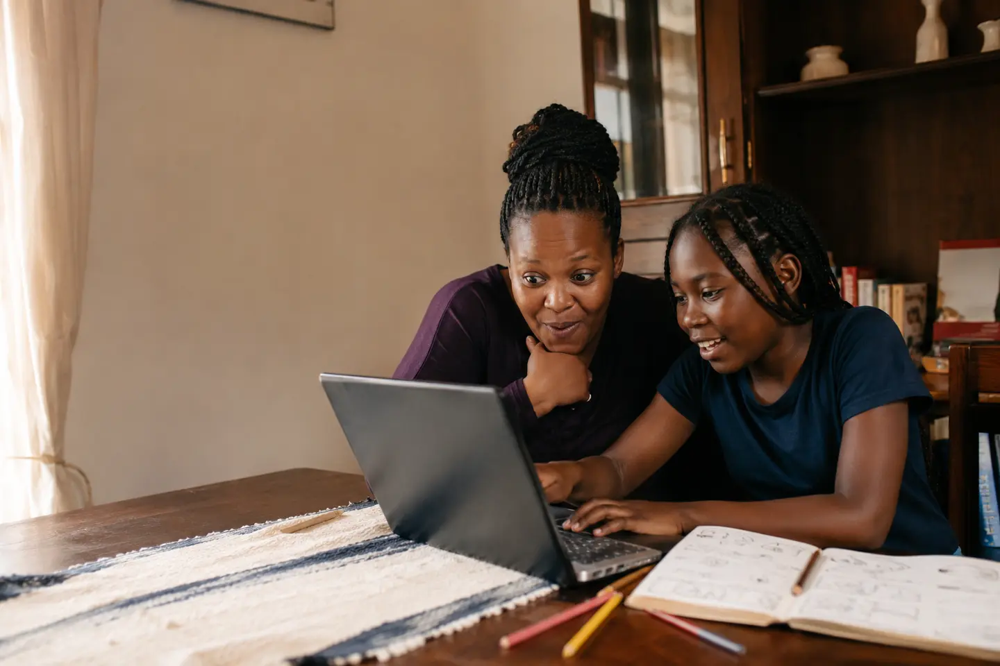
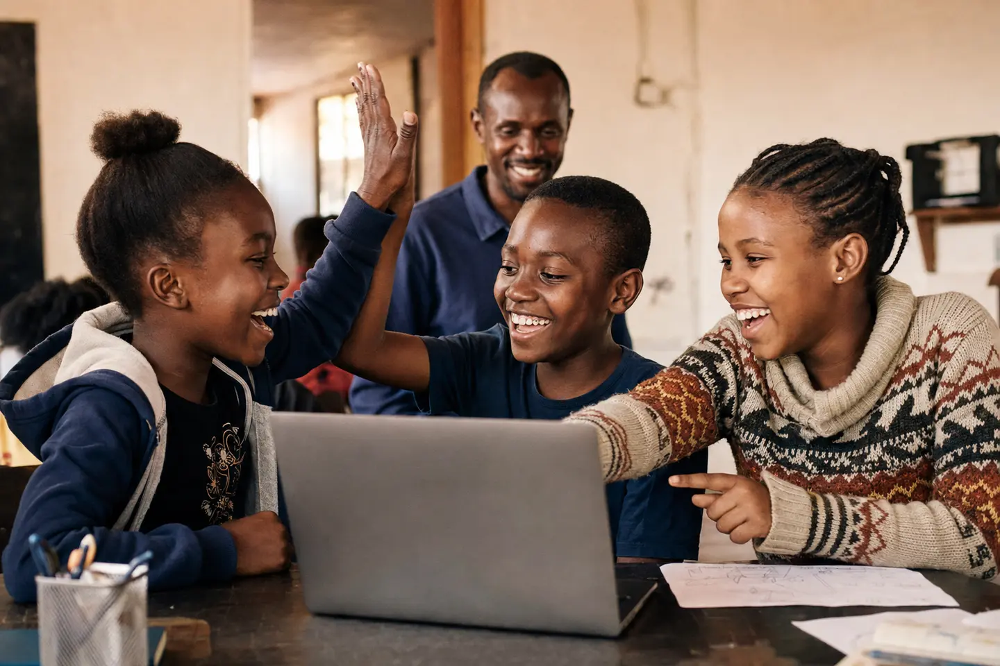
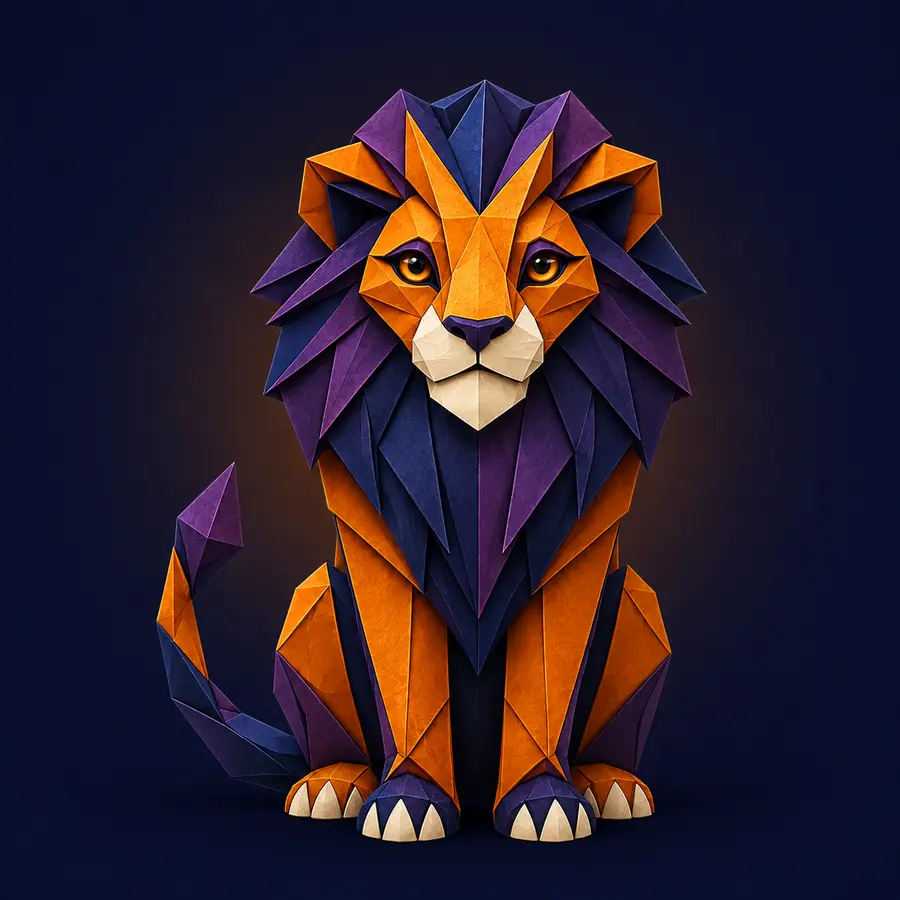

First comes
FOR THE CHILD WHO ASKS, “CAN I MAKE THAT?”
Give their screen time a story worth telling.
One day they are playing a game. The next, they are changing the rules, fixing the bugs and calling you over to say, “Look what I made.”
No experience needed
Ages 10 to 12 course open
Phone and computer friendly

THE BEST PART
“Mum, come see this.”

FARA SAYSStart small. Make it yours.
Less passive scrolling.
More “let me try.”
Something real to show at the end.
A DIFFERENT KIND OF SCREEN TIME
You are not giving them more time online. You are helping them take charge of it.
Then comes
“I found the problem.”
Getting stuck becomes a clue, not a reason to quit.Before long
“Want to try my game?”
Confidence grows because there is something real behind it.IDEAS THEY CAN OPEN
They do not just learn about code. They leave with things they made.
The first course turns each new idea into a project children can play, share and explain in their own words.
A game with their own rules
Characters move, scores change and every level brings a new decision.
A story that listens
Buttons, choices and characters let the player decide what happens next.
A first corner of the web
A real page about a favourite animal, dream, hobby or community idea.
One project that feels truly theirs
They plan it, test it with someone and make it better after feedback.

THE MOMENT IT WORKSBUILT TO BE SHARED
Coding feels different when someone else can play what you made.
Children learn with more energy when the work has a person on the other side. A sibling can test the game. A friend can choose the ending. A parent can ask how the hard part was solved.
Not a lonely worksheet
Every stage leads to a conversation, a test or a small creation.
HOW A LESSON FEELS
Small enough to begin. Interesting enough to keep going.
- 1Meet one clear problem
A character is stuck. A score will not change. A story needs a choice.
- 2Try before being told
Children move pieces, change instructions and see what the computer does.
- 3Use a hint that still leaves thinking to do
The guide points to the clue without quietly giving away the answer.
- 4Make the result personal
They change the colours, rules, characters or story until it feels like theirs.
- 5Show someone and explain
The learner says what worked, what failed and what they want to add next.
MEET THE KIDYCODE GUIDES
Six animals. Six ways to become a stronger thinker.
Every mentor appears on its own and teaches one useful habit. Children know who to look for when they need to plan, remember, test or keep going.
PLAN
Fara the Fox
Turns a big idea into small steps.

DEBUG
Odi the Owl
Turns a bug into a useful clue.

REMEMBER
Ella the Elephant
Shows how information can change.
REPEAT
Chui the Cheetah
Finds the pattern that saves work.

IMAGINE
Bina the Butterfly
Gives stories choices and movement.

FINISH
Leo the Lion
Helps the learner present with pride.
TRY ONE SMALL CHALLENGE
Can you get Kito past the rock?
No coding words to memorise first. Read the instructions, choose what is missing and see what happens.
READTRYNOTICE
🤖
IDEA
LAB ✦
LAB ✦
1 moveForward();
2 moveForward();
3 // choose a command
4 moveForward();
Pick one. A wrong answer will not break anything.
YOU DO NOT NEED TO KNOW CODE
Your part is simpler than you think.
Ask them to show you what they made. Ask which part was hard. Ask what they would change with one more hour. Those questions make the learning visible without turning home into another classroom.
See the full ages 10 to 18 path ↗WHAT YOU CAN LOOK FOR
- A project opens and does somethingProgress has more than a score.
- They can explain one decisionThe work is theirs, not copied.
- They know what to try when stuckConfidence includes asking for help well.
- There is always a next ideaCuriosity has somewhere useful to go.
MADE WITH REAL HOMES IN MIND
Friendly at the start. Serious about where a child can grow.
KidyCode is built in Kenya for homes with full schedules, shared devices and children whose interests do not fit inside one school subject.
We begin with games and stories because that is where many young imaginations already live. Then we help the learner move from blocks to websites, real code and projects that solve a problem for someone else.
Learning for yourself? See the adult path →THE FIRST PROJECT CAN BE SMALL
It only needs to be theirs.
Code Explorers for ages 10 to 12 is ready to begin.